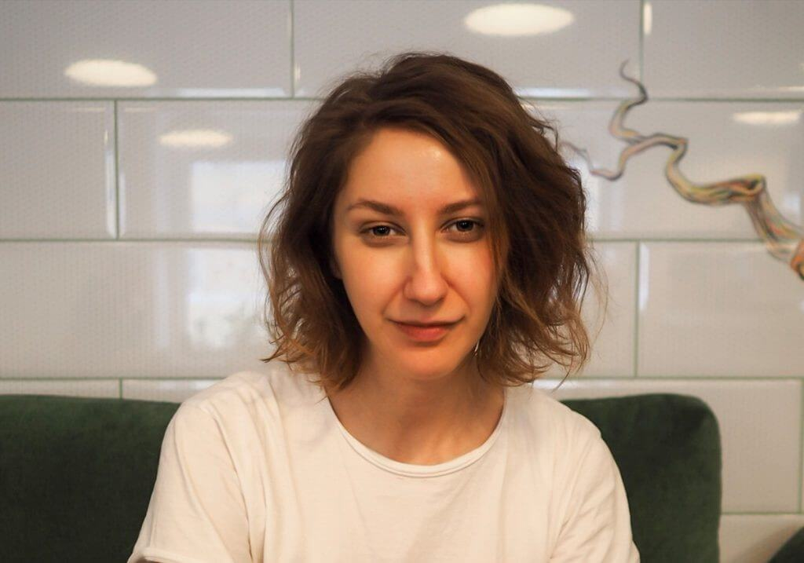
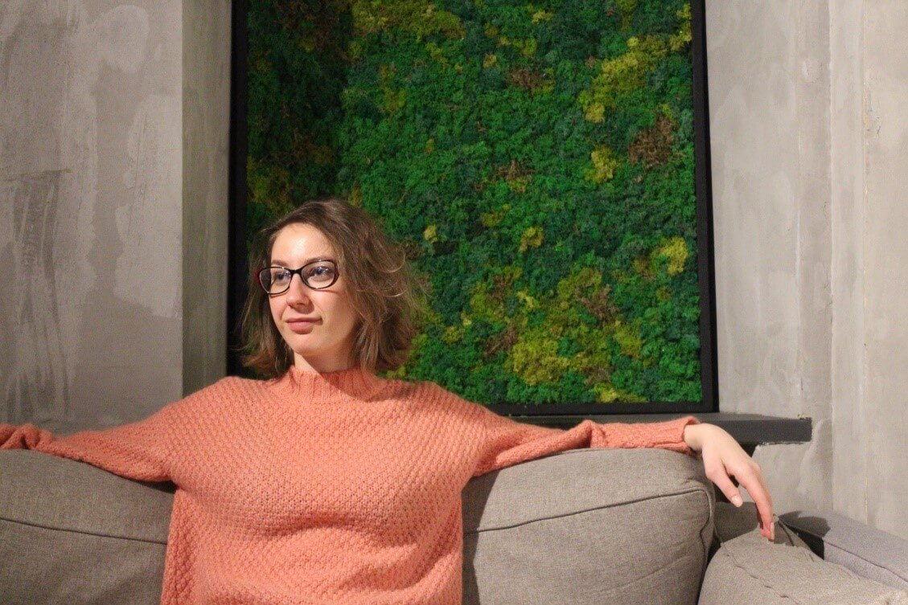
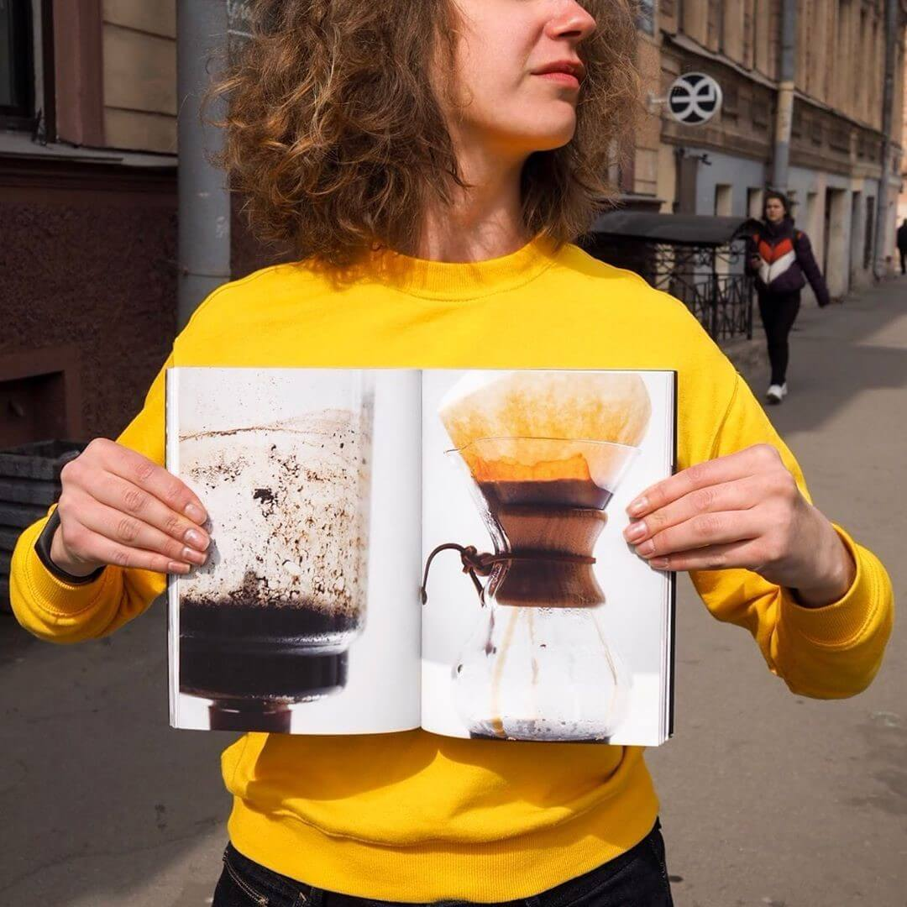

Az ízületi betegség még nem halálos ítélet. Személyes tapasztalat: minden előrejelzés ellenére legyőztem a reumatoid artritiszt.
Üdvözlök mindenkit, a nevem Anna. 31 éves vagyok. Több mint hat évvel ezelőtt reumatoid artritiszt diagnosztizáltak nálam.
Nos, az ízületi problémák nem csak az időseket érintik. Nemtől és kortól függetlenül mindannyian kockázatnak vagyunk kitéve.
A rák, HIV, AIDS ma már senki számára nem ismeretlen fogalmak... mindenki tudja, hogy az emberiség folyamatosan keresi annak a módját, hogyan szabadulhatunk meg ezektől a betegségektől. A reumatoid artritisz ellenben kevéssé emlegetett betegség. Nem keresik rá a gyógyírt. Pedig minden beteg tudja, hogy ez a betegség nem gyógyítható véglegesen. Legalábbis ezt mondják nekünk az „orvosok”.
Vannak elképzeléseim arra vonatkozólag, hogy miért ez a nagy hallgatás. A reumatoid artritisz elleni gyógyszer már létezik. Megtaláltam és ki is próbáltam magamon.
Most azok az orvosok, akikkel szenvedésem éveiben találkoztam értetlenkedve szemlélik az eredményt: márpedig csoda történt! A reumatoid artritisz nem gyógyítható! Azt mondja: hölgyem, az ön esete egyedülálló, be kéne vinni az eredményeit az intézetbe kivizsgálásra.
A kezüket tördelőket most még jobban sokkolni fogom: nem vagyok egyedül, több ezren vagyunk ilyenek. Nem csak a „reménytelen esetek” gyógyultak meg artritiszből. Rengeteg ízületi betegségben szenvedő kapta meg újból a lehetőséget, hogy teljes életet élhessen. De ne szaladjunk ennyire előre.
Szóval mint már mondtam, az egész hat évvel ezelőtt kezdődött.
Az első „vészjelző” a kezemben érzett reggeli merevség volt. Az orvosok váltig állították: túl sokat dolgozom a számítógépen.
Később már nem csak a karom fájt, de a lábaim is. Az ágyból való kikelés mindennapos kínszenvedéssé vált: az ébredés utáni 20-40 perc egyszerűen rémálom volt. A karomban olyan erős fájdalmat éreztem, hogy képtelen voltam felöltözni, amíg be nem vettem egy fájdalomcsillapítót.
Annyi orvosi vizsgálaton átestem, hogy végül a reumatológián kötöttem ki. Az idős orvosnő nem engedett az igazából: „Csak beképzeli magának. Öltözzön melegebben, kislány. Nincs semmiféle reumatoid artritisz”. Két évvel később ugyanehhez az öreglányhoz kerültem rendelésre, aki kénytelen volt belátni, hogy tévedett: „Előfordul az ilyen”.
Nem egy és nem két ilyen orvos van. Higgyétek el, mint tapasztalt páciensnek, hogy ami az egészségügy ezen területén zajlik, az gyalázat. Szerencsére eljutottam egy igazi szakemberhez. De mielőtt ez megtörtént, ezerszer hallottam a mondatot: „Az ízületi gyulladás nem gyógyítható. Tessék elfogadni és együtt élni vele”.
”Mi ez a baromság?! Ti nem gyógyítotok meg”.
Csak 25 éves fiatal vagyok. Egy csomó tervem van a jövőre nézve. Elhatároztam, hogy mindenáron megtalálom a módját, hogy teljes életet élhessek.
Nem sokkal azelőtt, hogy kialakult nálam a betegség, otthagytam az előző munkahelyemet és elmentem pultosnak. Imádtam ezt a munkát. Már kész volt az üzleti tervem az elkövetkező néhány évre. De egyre gyakrabban fogott el az aggodalom. Munka végzése közben egyre inkább azon kaptam magam, hogy képtelen vagyok felemelni a csészét az asztalról. Egyszerűen nincs hozzá elég fizikai erőm, hogy tovább folytassam azt, amit szeretek csinálni.
De az álomnak teljesülnie kell!
Jelenleg minden reggel 6-kor kelek (fájdalomcsillapító nélkül) és elindulok munkába az én kedvenc kávézómba, aChoco Bean-be. Hatalmas lelkesedéssel, fájdalom nélkül készítem az italokat a vendégeknek. Már nem okoz nehézséget felemelni a csészét. És egyáltalán, bármit!
Igen, amint már fentebb mondtam, szerencsére találtam egy remek orvost. Három hónapot vártam, hogy sorra kerüljek nála. Mivel már így is rengetegen járnak hozzá, megkért engem, hogy ne említsem meg a nevét a bejegyzésemben. Ő egyike azon keveseknek, aki a közvélekedéssel szembemenve azt állítja hogy az ízületi gyulladás igenis gyógyítható! És szavait több ezer példával támasztja alá, amelyet orvosi praxisából hozott. Például itt vagyok én, élő bizonyíték arra, hogy a reumatoid artritisz kezelhető.
Miután mindezen szenvedésen, amelyet a betegség magával hordoz, keresztül mentem, nagyon együtt tudok érezni az ízületi betegségben szenvedő emberekkel. Tudom, hogy nem mindenki olyan „kemény dió”, mint amilyen én vagyok. Hány embert meggyőztek már az álorvosok arról, hogy a fájdalom az élet része? Hogy megkíméljelek titeket attól, hogy hónapokat kelljen várni időpontra: a reumatoid artritiszt én az Hondrogel segítségével kezeltem ki.
Biztosan hallottak már sok féle ízületerősítőről. Az Hondrogel nem egy átlagos ízületerősítő szer. Úgy tartják, hogy ez az egyetlen ötödik generációs ízületerősítő készítmény. Nem csupán védi az ízületet a további pusztulástól, de biztosítja azok helyreállítását is. Sőt, az Hondrogel enyhíti a fájdalmat és a gyulladást, ez egy szteroidoktól mentes és emellett teljes mértékben természetes alapú készítmény.
Egész irományom alatt igyekeztem kerülni a gyógyszertári összeesküvés témakörét. De ez az igyekezet két okból is sikertelennek bizonyult: egyrészt, mindenhol azt hirdetik, hogy az ízületi gyulladás csak tünetileg kezelhető. Rászoktatnak minket mindenféle fájdalomcsillapítóra, amelyek csak a tüneteket enyhítik. És itt nem csak az anyagiakkal van probléma. A gyógyszertárban ízületi gyulladás kezelése címen kapható készítményeket és azok mellékhatásait a saját bőrömön tapasztaltam meg.
Másodszor pedig: az Hondrogel lehetetlen gyógyszertárban beszerezni. Ti is tudjátok, miért… De mindjárt meg is nyugtatlak titeket. A kezelőorvosom megosztotta velem a linket, amelyen elérhető a gyártó hivatalos weboldala, és ő is onnan szerzi be a betegei számára. Az Hondrogel az ízületi betegségek széles spektrumával képes megbirkózni: az ízületi gyulladástól az artrózison át a baleseti sérülésekig mindent gyógyít.
MegrendelésÉn tudom, mennyire értékes egy-egy támogató szó, amikor mindennapos harcot vívsz a saját testeddel. És mennyire fontos, hogy ne veszítsük el a reményt. A történetemet tehát egyetlen mondattal kívánom összefoglalni: soha ne adjátok fel. Ne higgyétek el, amit mondanak nektek, még ha oly népszerű is az a vélemény. Tartsatok a célotok felé, higgyétek a legjobbat és ne adjátok fel a küzdelmet.
Ha pedig elértétek a sikert, nyújtsátok kezeteket az segítségre szorulók felé.
A küldetésemet befejezettnek tekintem.😊

Megjegyzések:
Pont most voltam nemrég a Choco Bean-ben, nagyon klassz hely. Sok sikert és erőt!Anna:
Köszönöm szépen!
Ez egy az egyben rólam szól. 13 évig küzdöttem az ízületi gyulladással, a diagnózis megállapítása után 10 évvel hormonokat kezdtem el szedni. Mit is mondjak, jól megviselte az egészségemet… Én sem ültem ölve tett kézzel. Rengeteget kutakodtam az interneten a betegséggel kapcsolatban, fent voltam az összes erről szóló fórumon. Ne reménykedjetek az orvosokban. Csak úgy találtam rá az igazságra, hogy saját magam jártam utána a dolgoknak. Tudom Anna, kiről beszélsz! 😊 De mivel a mi emberünk meg akarja őrizni a névtelenséget, én sem említem itt meg a nevét. Én is ennél a reumatológusnál voltam. És igen, én is az Hondrogel -nak köszönhetem a gyógyulást.Anna:
Lilla,a betegség ráveszi az embert, hogy megismerje önmagát. Ügyes vagy!
Az olyan emberek, mint a történetünk hőse, lenyűgöznek. Mi, emberek, még diagnózis nélkül is minden kis apróságon rágódunk, jelentéktelen dolgokon, miközben megfeledkezünk arról, hogy a legfontosabb az egészség.
Hihetetlen történet! Bár nekem nem artritiszem volt, hanem artrózisom, ami 18 éves koromban kezdődött az állandó túlterhelés miatt, ami a munkámból adódik (zenész vagyok). Én is próbáltam kezelni, de szerintem többet ártottam vele: először nekem is rossz diagnózist állítottak fel, majd hialuronsavat injekcióztak az ízületembe. Most már tudom, mennyire nem gondolták ezt át akkor, az én esetemben ugyanis erre nem lett volna szükség. Szóval az utóbbi két évben nem telt el úgy nap, hogy ne fájtak volna az ízületeim. Nem tudom behajlítani a karomat, támaszkodni sem bírok, egy csomó mindent nem tudok megcsinálni, még a hétköznapok szintjén sem. Baromira demotivál. De leginkább félek, mert a betegségem előtt úgy voltam vele, hogy csak a rák és az aids számít gyógyíthatatlan betegségnek. Aztán kiderült, hogy rengeteg ember szenved az ízületek, szalagok, inak miatt, de mint kiderült, mégis létezik megoldás! Anna, hálásan köszönöm! Megrendeltem az Hondrogel -t. Megmentettél engem. Te is tudod, mennyire fontos egy zongorista számára, hogy az ízületek egészségesek legyenek. Használni fogom!Anna:
Nincs mit! Jobbulást kívánok:)
Egy éve "reumatoid artritiszt" állapítottak meg nálam. Azóta sok mindent megtudtam erről a betegségről és most is foglalkoztat a probléma. Köszönöm szépen a cikket, az ihletet és az Hondrogel -t!
Anna, anyukám is Szabó doktorhoz járt :) tíz évig szenvedett a köszvénytől. Az Hondrogel mentette meg, már második éve teljesen jól van, a betegséget már rég elfelejtette…Anna:
Pszt! Direkt kértem, hogy ne írjátok le a nevét:) Sok egészséget kívánok anyukádnak a továbbiakban is!